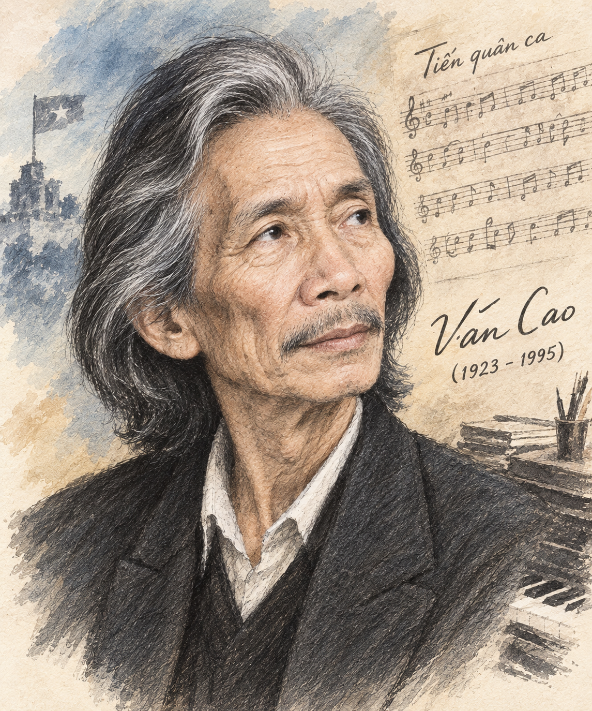
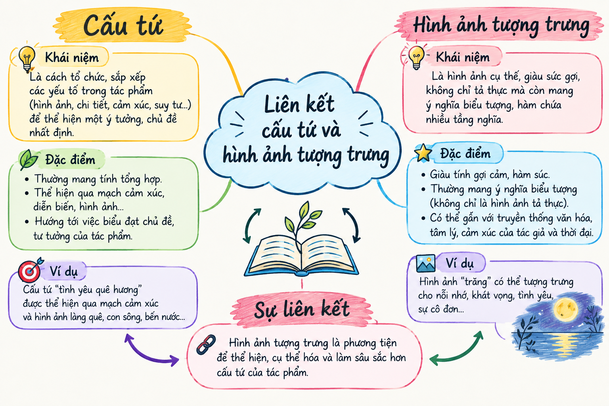

"Thời gian qua kẽ tay - Làm khô những chiếc lá..." Thời gian có sức mạnh hủy hoại vạn vật, hay nghệ thuật và tình yêu chân thành sẽ chiến thắng sự tàn khốc ấy? Bài học này giúp chúng ta khám phá cấu tứ độc đáo cùng hệ thống hình ảnh tượng trưng đầy suy ngẫm trong bài thơ của nghệ sĩ tài hoa Văn Cao.
Tên khai sinh: Nguyễn Văn Cao, quê ở Nam Định, sinh ra và lớn lên tại Hải Phòng.
Sự nghiệp đa tài: Ông là nhạc sĩ, họa sĩ, nhà thơ - một trong những gương mặt lớn tiêu biểu nhất của nền văn nghệ Việt Nam hiện đại.
Đóng góp lịch sử: Tác phẩm "Tiến quân ca" của ông được chọn làm Quốc ca của nước Cộng hòa xã hội chủ nghĩa Việt Nam. Các tập thơ chính: Lá (1988), Tuyển tập Văn Cao - Thơ (1994).

Hình 1: Chân dung cố nghệ sĩ Văn Cao (h1.png)Văn Cao
Thời gian qua kẽ tay
Làm khô những chiếc lá
Kỉ niệm trong tôi
Rơi
như tiếng sỏi
trong lòng giếng cạn
Riêng những câu thơ
Riêng những bài hát
còn xanh
Và đôi mắt em
như hai giếng nước.
Sáng tác: Xuân Đinh Mão, 2/1987 (Rút từ Tuyển tập Văn Cao - Thơ, NXB Văn học, 1994)
Khái niệm trọng tâm:
Cấu tứ của bài thơ "Thời gian" được xây dựng trên **phép đối lập tương phản sâu sắc** giữa sự vô tình, hủy hoại của thời gian vật lý và sự vĩnh cửu của những giá trị nghệ thuật, tình yêu con người.
| Hình ảnh thơ | Ý nghĩa tượng trưng & Suy ngẫm nghệ thuật |
|---|---|
| "Thời gian qua kẽ tay" | Thời gian trôi đi nhanh chóng, không thể níu giữ; vừa vô hình vừa mang tính hữu hình cụ thể. |
| "Rơi như tiếng sỏi trong lòng giếng cạn" | Sự vỡ tan, khô khốc của kỉ niệm khi bị thời gian làm lãng quên; âm thanh cô độc, xót xa. |
| "Câu thơ", "Bài hát" - "Còn xanh" | Tượng trưng cho giá trị tinh thần bất tử. Nghệ thuật chân chính chiến thắng mọi quy luật hủy hoại. |
| "Đôi mắt em như hai giếng nước" | Tượng trưng cho vẻ đẹp tình yêu trong trong sáng, ngọt ngào, đong đầy dưỡng chất cho tâm hồn. |

Hình 2: Sơ đồ tư duy liên kết cấu tứ và hình ảnh tượng trưng (h2.png)Phân tích hiệu quả nghệ thuật của biện pháp tu từ so sánh trong câu thơ: "Kỉ niệm trong tôi / Rơi / như tiếng sỏi / trong lòng giếng cạn".
Hướng dẫn chi tiết:
• Phép so sánh cụ thể hóa cái vô hình (kỉ niệm rơi/quên đi) bằng cái hữu hình (tiếng sỏi rơi vào giếng cạn).
• Từ "Rơi" đứng riêng 1 dòng thơ tạo nhịp ngắt hẫng hụt, diễn tả cảm giác trống trải, tiếc nuối trước sự phôi phai của thời gian.
Tại sao tác giả lại chọn màu "xanh" cho những câu thơ và bài hát?
Hãy liên hệ bài thơ "Thời gian" với một tác phẩm văn học hoặc nghệ thuật khác mà bạn biết bàn về sự trường tồn của cái đẹp vượt qua thời gian.
Gợi ý hướng giải quyết:
- Học sinh có thể liên hệ với bài thơ "Truyện Kiều" của Nguyễn Du (giá trị nhân đạo sống mãi qua hàng thế kỷ).
- Hoặc bức tranh "Mona Lisa" của Leonardo da Vinci (nụ cười thách thức thời gian).
- Rút ra điểm tương đồng: Nghệ thuật kết tinh từ tâm huyết và cái tâm chân thành của nghệ sĩ sẽ thắng được sự tàn phá của thời gian.
Bài thơ "Thời gian" được sáng tác vào mùa xuân năm Đinh Mão (1987), thời điểm đất nước đang bước vào giai đoạn Đổi mới. Bài thơ chỉ gồm 42 chữ nhưng cô đọng triết lý nhân sinh cả một đời sáng tạo nghệ thuật của Văn Cao.
Tự vẽ một sơ đồ tư duy phân tích mối tương quan giữa 3 yếu tố: Thời gian - Nghệ thuật - Tình yêu dựa trên công thức xác suất tác động \( P_{tđ} = \frac{N_{hữu\_hình}}{N_{vĩnh\_cửu}} \xrightleftharpoons 0 \) để ghi nhớ bài học dễ dàng hơn!
Khi phân tích thơ tự do hiện đại, cần chú ý đến nhịp điệu ngắt khúc đặc biệt, cách xuống dòng đột ngột (như từ "Rơi") và tính tượng trưng đa nghĩa của hình ảnh thay vì chỉ hiểu theo nghĩa đen bề mặt.
Hãy trả lời 10 câu hỏi để củng cố kiến thức bài học!
Lời giải chi tiết:
• Hình ảnh "giếng nước" gợi sự trong trẻo, sâu lắng, tươi mát và là nguồn sống không bao giờ vơi cạn.
• So sánh "đôi mắt em" với "giếng nước" tượng trưng cho tình yêu chân thành, ngọt ngào - nguồn năng lượng giúp tâm hồn con người vượt qua sự khô tàn của thời gian.
(Áp dụng công thức thống kê tần suất ngôn ngữ: \( T = \frac{n_{ttrung}}{n_{tàn\_phai}} \xrightleftharpoons K \))
Lời giải chi tiết:
• Số lượng hình ảnh tàn phai \( n_{tàn\_phai} \): qua kẽ tay, khô chiếc lá, rơi, tiếng sỏi giếng cạn (4 hình ảnh).
• Số lượng hình ảnh trường tồn \( n_{ttrung} \): câu thơ, bài hát, còn xanh, đôi mắt em, giếng nước (5 hình ảnh).
• Tỷ số thống kê: \( T = \frac{5}{4} = 1.25 \xrightleftharpoons T > 1 \).
• Kết luận: Tỷ lệ nhóm từ vựng khẳng định sự trường tồn áp đảo nhóm từ tàn phai, khẳng định niềm tin mãnh liệt của Văn Cao vào cái đẹp bất tử.
Lời giải chi tiết:
• "Còn xanh" nhịp 2 tiếng đứng riêng trên dòng thơ như một chiếc lá mãi mãi xanh tươi.
• Đó là lời khẳng định đanh thép: Thời gian có thể làm khô lá cây tự nhiên, nhưng nghệ thuật (thơ, nhạc) thì mãi mãi giữ nguyên sức sống tràn trề.